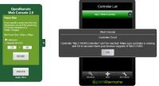

|
This page last changed on Aug 16, 2015 by aptalca.
Hi everyone,
I created a docker container for OpenRemote Controller 2.1.0
It runs on any x64 platform that supports docker, including unRaid and some Synology servers.
You can find the container and the instructions here: https://hub.docker.com/r/aptalca/docker-openremote/
It runs on any platform that supports docker
Just for my understanding. Would it also run on the ARM platform of Raspberry Pi for which there seems to be a Docker available? I read a bit around docker yesterday. I understood compilation was done per processor architecture: x86, armhef etc.

Posted by pz1 at Aug 16, 2015 09:15
|
|
I looked into it and you are right, containers built for x86/x64 don't run on rpi (fixed the post)
I'll look into how to build for arm
Posted by aptalca at Aug 16, 2015 18:02
|
|
Hi.
I updated to 5.2 version of the DSM, and can not now start OpenRemote (before update DSM, OpenRemote on DSM 5.1 version worked fine with Java 6. Now is not working.
http://www.openremote.org/pages/viewpage.action?pageId=23600722
I installed Docker on my DS3615 DSM5.2-5592U3, and try to run Openremote. But I get this error (screenshot). What could it be?

Posted by aleksey_z at Aug 22, 2015 14:08
|
|
Based on that picture, it seems you didn't enter the controller ip address
the format should be http://serverip:port/controller
What you have is http://:port/controller (missing the ip and that's why the webconsole cannot connect)
Posted by aptalca at Aug 22, 2015 17:12
|
|
This picture, with the following container configuration:
Local Port: 18581
Port container: 8080
Reference: http://192.168.1.7:18581/controller
And another question, in OpenRemote (in Docker), for OpenRemote need to replace the file zwave.jar. I replace a file, but if I sync with the designer, the file is replaced.
Posted by aleksey_z at Aug 22, 2015 20:30
|
|
You need to provide more info. What you provided is confusing.
I am assuming that the picture was taken from the address http://192.168.1.7:18581/webconsole
You also mentioned that you can sync with the designer.
So it's safe to assume that your controller is working.
Your picture however displays the controller url with a blank ip address. The web console is trying to reach your controller at http://:18581/controller/ and it is not able to access because the correct address should be http://192.168.1.7:18581/controller/
In the web console, edit the controller you added and fix the address and it should work. Attached is a pic of my webconsole showing the correct url (My server ip is 192.168.1.40 and the host port is 8089):
Regarding the designer sync rewriting files, that is not related to docker. It is an openremote thing and it is not under my control
Posted by aptalca at Aug 24, 2015 18:51
|
|
Hi
Just updated my DSM to 5.2-5644. Had OpenRemote package installed some time ago. But after update ti didn't work anymore. Tried to uninstall and install again, just to find the package wont install again.
Found this entry, and tried the docker package instead.
I am new to openremote aswell as docker.
I managed to retrieve the image.
Selected "Start" and "Run" pasted the run string found on docker hub:
docker run -d --name="OpenRemoteController" --net="bridge" -p 8080:8080/tcp -v "/path/to/config":"/config":rw -v /etc/localtime:/etc/localtime:ro aptalca/docker-openremote
changed "/path/to/config" to a folder i created at "/opt/share/openremote/config".
When it try to start it, i get "unsoported --net". I just ignored it, but it fails to start, and log show:
Start container OpenRemoteController failed: Cannot start container 172e2aa09b5b522982ebb9f5e5f62f55df62e510713aa46706cc428b9a9261f8: 8 System error: exec: "-v": executable file not found in $PATH
admin
2015/11/07 00:10:45
err
I dont know what i am missing here - any clues?
BR Kim
Posted by kimschmock at Nov 06, 2015 23:32
|
|
Hi Aptalca,
First of all, thank you for sharing your work. I really appreciate. The container is installed and it's running exept the KNX connection. here are the logs. Could help me to have Openremote connecting to my KNX gateway
For your information,:
- a classical openremote installation is fully functional and communicate with the KNW gateway
- I'm running DSM 6.0 beta
- the controller/webconsole is reachable
regards
Yann
WARN 2015-11-23 18:46:51,735 (KNX): Could not connect
org.openremote.controller.protocol.knx.ConnectionException: KNX-IP interface not found
at org.openremote.controller.protocol.knx.KNXIpConnectionManager.waitForConnection(KNXIpConnectionManager.java:264)
at org.openremote.controller.protocol.knx.KNXIpConnectionManager.getConnection(KNXIpConnectionManager.java:222)
at org.openremote.controller.protocol.knx.KNXIpConnectionManager$ConnectionTask.run(KNXIpConnectionManager.java:989)
at java.util.TimerThread.mainLoop(Timer.java:534)
at java.util.TimerThread.run(Timer.java:484)
INFO 2015-11-23 18:46:51,737 (KNX): Trying to create connection
INFO 2015-11-23 18:46:51,737 (KNX): Removing connection
INFO 2015-11-23 18:46:51,738 (KNX): KNX-IP socket listener IOException
java.net.SocketException: Socket closed
at java.net.PlainDatagramSocketImpl.receive0(Native Method)
at java.net.AbstractPlainDatagramSocketImpl.receive(AbstractPlainDatagramSocketImpl.java:136)
at java.net.DatagramSocket.receive(DatagramSocket.java:759)
at org.openremote.controller.protocol.port.DatagramSocketPort.receive(DatagramSocketPort.java:78)
at org.openremote.controller.protocol.knx.ip.IpProcessor$PhysicalBusListener.run(IpProcessor.java:82)
WARN 2015-11-23 18:46:51,739 (KNX): KNX-IP socket listener stopped
INFO 2015-11-23 18:46:51,740 (KNX): KNX Connection manager resolving local host IP addresses...
INFO 2015-11-23 18:46:51,741 (KNX): Found candidate NIC: name:eth0 (eth0)
INFO 2015-11-23 18:46:51,742 (KNX): Skipped IPv6 address (not supported by KNX) /fe80:0:0:0:42:acff:fe11:2%15
INFO 2015-11-23 18:46:51,742 (KNX): Added candidate IP address to set - /172.17.0.2
INFO 2015-11-23 18:46:51,743 (KNX): Skipping loopback interface: name:lo (lo)
Posted by yannph at Nov 23, 2015 19:00
|
|
{kind=link}
{kind=link}
{kind=link}
{kind=link}